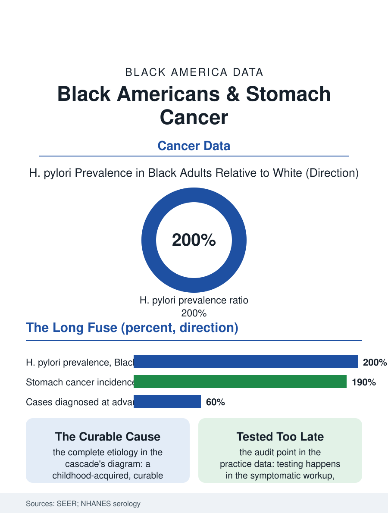

Black Public Health
The Long Fuse: Black Americans and Stomach Cancer
A curable bacterium carried by a majority, a cancer at twice the rate, and a cure that sits in the formulary while the cascade runs. The stomach file.

Stomach cancer, gastric cancer, has receded from its historic position as a leading killer to a mid-tier incidence in the United States, but its distribution is not the nation's average: Black Americans develop it at roughly twice the white rate and die of it at a wider multiple, with the bacterium at its root, Helicobacter pylori, carried by a majority of Black adults in the serology data. This article reads the stomach file.
The Bacterium and the Gradient
The etiology file is unusually complete for a cancer: the chronic H. pylori infection, acquired in childhood in the crowded household conditions the infection's epidemiology maps, drives the intestinal-type gastric cancer through the decades-long sequence of gastritis, atrophy, and metaplasia that the pathologists named the Correa cascade, and the infection's prevalence by race in the national serology surveys runs at roughly double in the Black population what it is in the white, a distribution composed of the childhood conditions of the cohorts now at cancer age, the household crowding and the sanitation era of the Jim Crow South and the immigrant childhoods of the foreign-born file. The incidence gradient follows the prevalence with the cascade's decades of lag, the SEER data placing the Black rate at the stated multiple, with the foreign-born Black and the Southern-born cohorts carrying the infection era's heaviest loads. The cardia and non-cardia split matters to the file's modern map: the non-cardia cancers, the cascade's product, dominate the Black incidence, while the cardia cancers of the reflux and obesity files dominate the white figure's composition, the two stomachs' cancers being substantially different diseases filed under one organ's name. The diet file inside the etiology, the salted and preserved foods of the older cohorts' tables and the fresh produce's scarcity in the same, adds its gradient to the bacterium's, so that the cascade's staircase is climbed in a kitchen as well as a clinic, and the eradication era's programs in the high-incidence countries paired the antibiotics with the table's reform in the pattern the prevention's completeness requires.
Eradication's Missed Appointment
The file's tragedy is the intervention's existence: H. pylori is eradicable with a two-week antibiotic course, the eradication's cancer prevention effect established in the trials of the high-incidence populations abroad, and the American practice's failure to test and treat the infection in the high-prevalence population is the file's audit point, the testing occurring in the workup of the symptoms the infection's late stages produce rather than in the prevention's window, the primary care encounter lacking the guideline's trigger for the asymptomatic carrier in the pattern of the other prevention files. The diagnosis's own route repeats the esophageal file's: the symptoms, the fullness and the pain and the weight loss, arrive late in the cascade's own terms, the endoscopy's timing deciding the stage, and the stage distribution in the registry runs the Black patient's worse, the surgical and systemic treatment files then following the pattern of the upper gastrointestinal cancers generally, the volume center's gate and the trial's thin enrollment included.
The Cascade's Long Fuse
The stomach file closes on the fuse's length, because the cascade's decades make this cancer the health file's purest case of the childhood conditions' adult invoice: the infection acquired in the sharecropper's cabin or the tenement's kitchen declares itself as the cancer of the sixty-year-old, and the eradication that would interrupt it costs the price of a generic prescription in the years when the carrier is a healthy adult in the primary care system's waiting room for other reasons. The immigrant health file adds the current cohort's: the African-born and Caribbean-born adults whose childhood prevalence ran higher still, whose screening the immigrant clinic's intake rarely includes, being the population the prevention's next decade can still reach at scale. The registries count the cases in the thousands each year, the Black rate at its multiple and the mortality's wider. The file's last entry is the cascade's diagram on the gastroenterology wall, the arrows from the child's infection to the elder's cancer drawn as a staircase of decades, each step a year the cure sat in the formulary, which is the file's whole measure of the distance between knowing and doing in the prevention's ledger.
More in Black Public Health
Hypertension Among Black Adults: Prevalence, Control, and Consequences
About 55 percent of Black adults have hypertension — the highest rate of any U.S. group. Prevalence, onset, control, and the stroke, heart, and kidney consequences in the data.
Diabetes Among Black Adults: Prevalence and Complications
Nearly one in five Black adults has diabetes, diagnosed or undiagnosed — and its complications fall with particular weight. The CDC data on prevalence, control, and outcomes.
Black Life Expectancy: The Gap at Birth and Its Causes
Black life expectancy at birth is about 73 years, roughly five years below the national figure — the summary measure of every health gap in this section. The CDC data.
Source: National Cancer Institute SEER program; National Health and Nutrition Examination Survey H. pylori seroprevalence data.